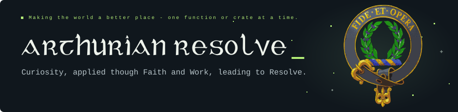

Hobby programmer. Lifelong learner.
Based in Germany · OWASP life member · Usually thinking in Rust, C, or Java.
I enjoy understanding how things work, improving the tools I use,
and turning what I learn into something useful.
Curiosity is the engine of achievement. - Ken Robinson
01 / What I work on
Systems & tooling. Rust utilities, filesystem work, and tools for understanding dependencies.
Security & assurance. Exploring secure software and structured, machine-readable controls.
Learning by building. Open-source experiments, maintained forks, and practical refinements.
02 / Some of my Quests
| Project | What you’ll find |
|---|---|
| fs2-turbo ↗ | Extended file and filesystem utilities in Rust. Rust · Maintained fork |
| cratos ↗ | A CLI for finding consumers of crates and GitHub repositories. Rust · Developer tooling |
| extism-with-wasmtime46 ↗ | An Extism fork patched for Wasmtime 46. Rust · WebAssembly |
| OSCAL-DORA-EN ↗ | Exploring DORA and its supporting acts in OSCAL. OSCAL · Structured controls |
03 / Track Record

![CONTRIBUTION - IT TOO SHALL PASS. Five separated travelers choose independent routes and respawn individually, with one visible ship of each type. Starflight enters from the right and clears a least-resistance route toward the left. Enterprise D, a Klingon Bird of Prey, Discovery One, and a blue TARDIS enter from the left. The Klingon and Discovery appear together after the lead ships reach the grid. Discovery moves in seven-, five-, and three-block bursts with orange rear exhaust. The Enterprise-sized TARDIS appears after Discovery reaches the grid, spinning during seven-block glides on a sine wave spanning the grid height. It reverses along the cleared wave to avoid obstacles and other ships. Harmless exchanges flash blue and pale green shields.](assets/github-contribution-grid-starship-dark.svg)
“This is the oath of a Knight of King Arther’s Round Table and should be for all of us to take to heart. I will develop my life for the greater good. I will place character above riches, and concern for others above personal wealth, I will never boast, but cherish humility instead, I will speak the truth at all times, and forever keep my word, I will defend those who cannot defend themselves, I will honor and respect women, and refute sexism in all its guises, I will uphold justice by being fair to all, I will be faithful in love and loyal in friendship, I will abhor scandals and gossip-neither partake nor delight in them, I will be generous to the poor and to those who need help, I will forgive when asked, that my own mistakes will be forgiven, I will live my life with courtesy and honor from this day forward.”
Sir Thomas Malory, Le Morte d’Arthur: King Arthur & the Legends of the Round Table, 1485
Always learning. Always another thing to build.